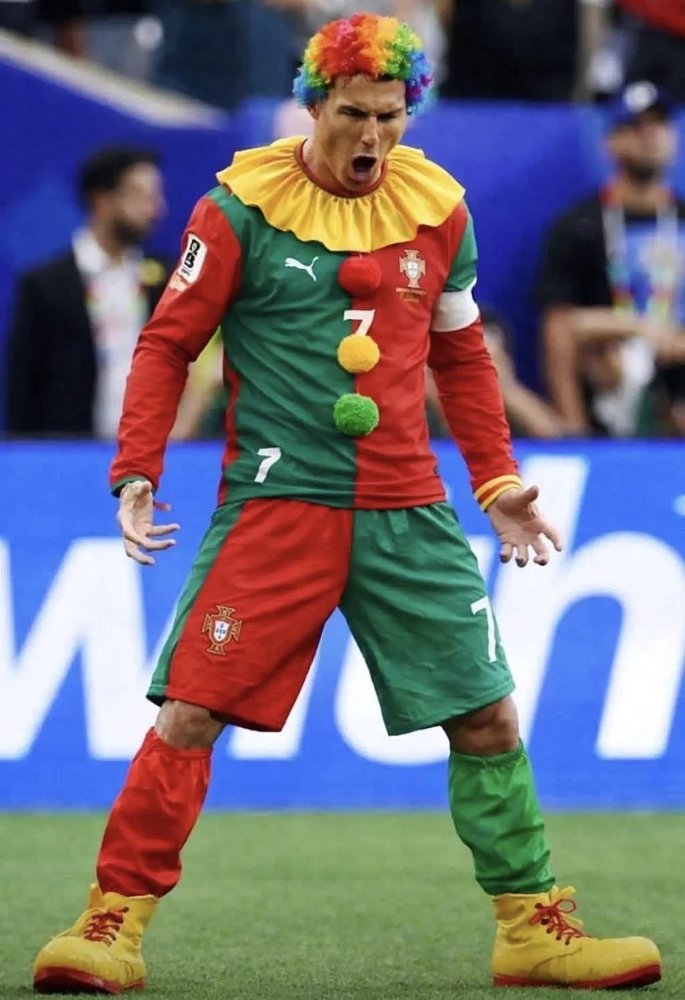

Cristiano Ronaldo's continued presence in the Portugal national team holds back a generation of talented players. His fan army harasses teammates online, the entire system bends to accommodate one aging star, and young forwards waste their prime on the bench. It's time to move on.
A 41-year-old playing 90 minutes while world-class young forwards sit on the bench is not leadership — it's sabotage.
Every Portugal loss triggers a wave of abuse toward his own teammates. Bruno Fernandes, Joao Felix, and Rafael Leao have all been targets.
Portugal doesn't play a system — it plays "get the ball to Ronaldo." A team of elite talent reduced to a support crew for one man.
Goncalo Ramos, Francisco Conceicao, and others watch from the bench while a 41-year-old plays 180 minutes per international break.
The national team can't hold a press conference without questions about Ronaldo's mood, Ronaldo's gestures, Ronaldo's next move.
Walking off before the final whistle, throwing captain armbands, refusing to celebrate teammates' goals — the pattern is clear.
Healthy teams allow criticism. Ronaldo's orbit treats any questioning of his place as an attack requiring a fan mobilization.
Another tournament, another early exit. Portugal hasn't reached a World Cup semifinal with Ronaldo as the focal point since 2006.
Portuguese fans increasingly want a fresh start. Polls show a majority now favor building around younger players.
Zero goals from open play in his last three major tournament knockout stages. The output no longer matches the name.